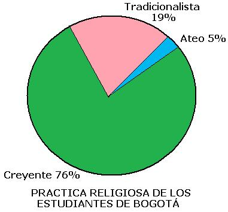
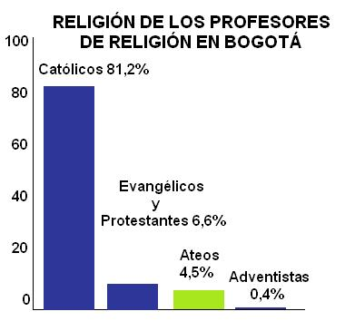

El presente trabajo expone los resultados de dos encuestas realizadas en el año de 2006 en 187 colegios elegidos aleatoriamente en Bogotá. La primera encuesta fue aplicada a 5.595 estudiantes de noveno grado, de los cuales 2.907 (52%) eran estudiantes de colegios públicos y 2.688 (48%) eran estudiantes de colegios privados. La encuesta tenía como objetivo explorar el estado actual de la diversidad religiosa entre los estudiantes y sus actitudes frente a la clase de religión que reciben en sus colegios. La segunda encuesta fue aplicada a 224 profesores encargados del área de religión en los colegios seleccionados con el propósito de caracterizarlos, indagar acerca de sus actitudes frente al pluralismo y la diversidad religiosa, y conocer en líneas generales el contenido de sus clases.
Encuesta estudiantes
A continuación se enumeran algunas de las conclusiones del análisis de la encuesta a los estudiantes.
Descripción religiosa de los estudiantes
Para tratar de clasificar el tipo de relación que mantienen los estudiantes con su práctica religiosa, y por lo tanto con un propósito meramente operativo, construimos la siguiente tipología:
Creyente: es aquel que cree y práctica una determinada religión.
Tradicionalista: es aquel que asiste a un culto por tradición familiar aunque interiormente no mantiene una creencia religiosa.
Ateo: es aquel que no practica ni cree en alguna religión
Una gran cantidad de estudiantes (76%) se identificaron como creyentes, un 19% como tradicionalistas y un 5% como ateos.

Respecto a su filiación religiosa, los estudiantes se identificaron en su gran mayoría como católicos (78,4%); en segundo lugar en tamaño porcentual están los estudiantes que se consideran cristianos evangélicos (11,8%) que junto con los protestantes y pentecostales sumarían el 13% de la población; en tercer lugar encontramos a los ateos (5,3%); y en cuanto lugar a los testigos de Jehová (1,2%). Teniendo en cuenta la fuerte tradición católica de Colombia, los datos confirmarían la tendencia del crecimiento de los nuevos movimientos religiosos, especialmente movimientos religiosos, especialmente de las comunidades cristianas evangélicas, y un aumento muy notorio en el número de ateos. Los budistas, mormones, judíos y musulmanes serían grupos inframinoritarios con porcentajes cercanos o inferiores al 0,1% de la población encuestada.
Carácter confesional de la educación religiosa
A la pregunta “¿En tú colegio te inculcan alguna religión en especial?”, el 39% de la población respondió afirmativamente. Al cruzar esta respuesta con el sector educativo (público o privado) encontramos que el 29,7% de los estudiantes de los colegios públicos y el 52,6% de los estudiantes coincidieron en afirmar que en sus colegios les inculcan una religión en particular. El 93% de quienes respondieron afirmativamente a esta pregunta, dicen estar recibiendo en su clase la doctrina de la Iglesia Católica. Estos datos corroboran el peso que sigue teniendo el ingrediente confesional en la clase de religión, tanto en colegios públicos como privados.
Características de las clases de religión
La gran mayoría de los estudiantes (88%) afirmó que en sus colegios se ofrece la signatura de religión. Sin embargo, “si tenemos en cuenta que la Ley General de Educación 115 determina la obligatoriedad del área de religión en todos los planes de estudio de enseñanza básica y media” nos preguntamos por el 12% que respondió negativamente.
El 63,4% de los estudiantes expresó que la clase de religión es de carácter obligatorio, entre ellos el 47,9% de estudiantes de colegios privados y el 58,8% de estudiantes de colegios públicos compartieron esta afirmación.
Situación especialmente preocupante en estos últimos pues estaría en contravía con el principio de constitucional según el cual en los establecimientos educativos del Estado ninguna persona podrá ser obligada a recibir esta clase (Artículo 68 de la Constitución).
Se les preguntó a los estudiantes cuál de los siguientes componentes es más importante en la clase de religión:
El conocimiento de las religiones
La formación ética y moral
Las dos anteriores por igual
La última opción (las dos anteriores por igual) fue mayoritaria con el 58% de las respuestas, seguida por la formación ética y moral con el 32%. Al parecer el área de religión y el área dedicada a la formación ética es una sola en un porcentaje importante de colegios encuestados.
Situación que contradice la Ley General de Educación 115 que en su artículo 23 define estas dos áreas en forma separada e independiente.
Frente a la pregunta: “¿Tu clase de religión gira alrededor del conocimiento sobre diversas religiones, una sola religión, ninguna religión?” la mayoría de los estudiantes (el 58%) contestó que su clase de religión les permite acercarse al conocimiento de diversas religiones. En ese mismo sentido la gran mayoría de los estudiantes (89%) considera que la clase de religión les muestra la diversidad religiosa que hay en el mundo.
Sin embargo, no podemos afirmar que la formación alrededor de la diversidad religiosa en los colegios corresponda necesariamente a una formación pluralista, especialmente porque desde una perspectiva confesional es necesario dar a conocer las “otras” religiones para subrayar sus errores y herejías.
Aproximadamente la mitad de los estudiantes encuestados (51,4%) tienen una percepción muy positiva respecto a su clase de religión, en temas como su calidad, el interés que les suscita y la utilidad que le encuentran.
De acuerdo con su filiación religiosa, son los estudiantes católicos los que tienen una percepción más positiva de su clase de religión. Lo que se explicaría por el carácter católico que tiene la clase de religión en la mayoría de los colegios encuestados.
Para conocer la importancia relativa que le otorgan los estudiantes a la clase de religión, se les preguntó cuánto aportaba a su información personal una serie de asignaturas. Los estudiantes consideran que la asignatura que más les aporta a su formación personal es español, y la que menos les aporta es artes, religión se encuentra en el penúltimo lugar. Igualmente se les preguntó a los estudiantes cuánto les interesaba una serie de asignaturas, las respuestas indicaron que la asignatura que más les interesa es deportes y la que menos les interesa es religión.
Al preguntar a los estudiantes acerca de la relación entre los contenidos de su clase y valores como la tolerancia y el respeto por la diferencia encontramos: La gran mayoría de los estudiantes (91%) considera que su clase de religión promueve valores para una mejor convivencia. La gran mayoría (93%) considera que su clase de religión les enseña a respetar las creencias religiosas de otras personas. La gran mayoría (88%) considera que en su clase de religión personas de creencias diferentes pueden expresarse libremente. Es importante recordar que la mayoría de los estudiantes son católicos y por esta razón no expresan ningún sentimiento de discriminación en clases de religión donde es muy frecuente la perspectiva confesional católica.
Cuando se les preguntó a los estudiantes cuál debería ser el contenido fundamental de su clase, la mayoría de ellos (52%) respondió que debería ser un espacio para aprender valores moral y ética; un 24% consideró que debería ser un espacio para conocer diversas religiones; y solo un 18% cree que debería ser un espacio para conocer su propia religión.
Discriminación religiosa en el colegio
Frente a la pregunta ¿Te has sentido obligado a participar en algún ritual religioso en tu colegio?, el 18,1% de los encuestados respondió afirmativamente; al cruzar esta información con el sector educativo del que provienen las respuestas encontramos que el 13,1% de los estudiantes de colegios públicos y el 23,4% de los estudiantes de colegios privados compartieron esta opinión. La mayoría de los estudiantes que expresaron sentirse obligados a participar de rituales religiosos se consideran como ateos o como creyentes de religiones diferentes a la católica. La mayoría de los rituales religiosos enumerados por los estudiantes como obligatorios son rituales católicos como misas y primeras comuniones. Esta situación va en contravía del carácter laico de la Constitución del 91 y es aún más contradictoria en los colegios públicos.
Un 7% de los estudiantes expresó haberse sentido discriminado en alguna ocasión a causa de sus creencias religiosas. Nuevamente ateos y no católicos manifestaron con mayor frecuencia experimentar esta situación. 16% de los creyentes no católicos y 21% de ateos respondió positivamente a esta pregunta. Entre las minorías que manifiestan sentirse discriminadas se destacan, en otras, los testigos de Jehová.
Cerca del 25% de los estudiantes ateos y del 15% de los creyentes no católico expresaron que sus profesores preferían a los estudiantes que practican una religión particular. Lo que se puede interpretar diciendo que los estudiantes perciben que sus compañeros, quienes comparten la religión de sus profesores, gozan de favoritismo. Como veremos en la siguiente encuesta, la mayoría de los profesores se identificaron como católicos.
Encuesta profesores
Descripción religiosa de los profesores
A continuación se enumeran algunas de las conclusiones del análisis de la encuesta a profesores.
La mayoría de los profesores (85%) se considera practicante de alguna religión, el 4,5% se identificaron como ateos y el 9,4% no se identificaron ni como creyentes, ni como ateos. Con respecto a religión que profesan, la gran mayoría (81,2%) se identificaron como católicos. Al sumar evangélicos, carismáticos evangélicos y protestantes, el 6,6% está en alguna vertiente del cristianismo protestante, y el 0,4% se identificaron como adventistas. Estos datos corroboran la información suministrada por los estudiantes de que el cristianismo evangélico y protestante constituye la segunda fuerza religiosa del país en número de adherentes.
Carácter confesional de la educación religiosa
La clase de religión según un poco más de la mitad de los profesionales encuestados (50,2%) es de carácter confesional en sus colegios, y en la gran mayoría de los casos católica, por lo tanto, se desarrolla teniendo como base los lineamientos y las cartillas diseñadas por la Conferencia Episcopal de Colombia para tal fin. Para el 39,4% de los profesores del sector público la educación religiosa en sus colegios es de carácter confesional.
Esto concuerda con la propuesta de la Iglesia Católica, regulada a través del concordato entre la Santa Sede y el Gobierno Nacional, que promueve la enseñanza confesional de la religión católica en los colegios del Estado.
Tanto en colegios públicos como privados, con mayor frecuencia en estos últimos, se siguen celebrando rituales religiosos católicos. Un 20% de los profesores encuestados manifestó que entre los deberes de los estudiantes se encuentra participar en estos rituales. Un 56% de los profesores manifestó que los estudiantes pueden participar de ellos opcionalmente. Entre los rituales católicos que se celebran, se destacan por su frecuencia: las misas, preparación para la primera comunión y miércoles de ceniza.
Formación académica de los profesores
La mayoría de los profesores encuestados no cuentan con un título universitario que certifique su competencia en el área de religión. Un 25,4% cuneta con una formación en ciencias sociales, pero los demás cuentan con una titulación poco afín al área; encontramos por ejemplo, profesores formados en comercio, desarrollo humano, química, biología o contaduría, encargados de la clase de religión. De acuerdo con la información suministrada por algunos de ellos, esto obedece a que en muchos colegios la clase de religión es una especie de “comodín” o “relleno”, mediante la cual los profesores llenan las horas que les hace falta para cumplir su jornada docente, situación más frecuente en los colegios públicos.
La falta de docentes especializados, así como la ausencia de estándares y programas para la clase de religión, pone de manifiesto que en un alto porcentaje de colegios, en especial públicos y no confesionales, directivos y docentes no consideran el área de religión como un área prioritaria de la formación de los estudiantes. En los colegios confesionales el área de religión reviste de mayor importancia, y los docentes encargados cuentan generalmente con una formación académica más a fin, aunque, por supuesto, “la enseñanza de la religión es de carácter confesional”.
Discriminación religiosa en el colegio
El 39% de los profesores encuestados manifestó preferir a los estudiantes que practican una determinada religión. El 20% manifestó predilección por los estudiantes católicos; mientras que el 5% expresó preferir estudiantes de otras religiones. Esta actitud se puede interpretar como una forma de discriminación frente a otras minorías como las constituidas por los estudiantes no católicos y ateos. Sin embargo, el 97% de los profesores encuestados manifestó tener en su clase estudiantes no católicos.
El 83% de los profesores encuestados expresó que en su colegio no existe la posibilidad de un trato especial en la clase de religión para estudiantes no católicos, nos referimos por ejemplo a la enseñanza confesional de otras religiones.
Perspectivas de la clase de religión
La mayoría de los profesores encuestados (81,5%) manifestó que la formación religiosa es responsabilidad de la familia y no del colegio, sin embargo, el 62% expresó estar de acuerdo con la obligatoriedad de la clase de religión, esta última respuesta es más frecuente en los colegios confesionales y privados. No tenemos claridad de cómo concilian los profesores estas dos posiciones que son en apariencia contradictorias.
La mayoría de los profesores encuestados (52%) considero que lo más adecuado es aprovechar la clase de religión para enseñar ética y moral; un 32% considera que lo más adecuado es aprovechar la clase de religión para enseñar historia de las religiones.
William Mauricio Beltrán Cely es profesor de la Universidad Nacional de Colombia en el área de sociología de la religión, investigador del Centro de Estudios Sociales de la misma universidad (CES), e investigador del Instituto Colombiano para el Estudio de las Religiones (ICER).
Volver a la sección Sociedad y religión
Comentarios
Comments powered by Disqus